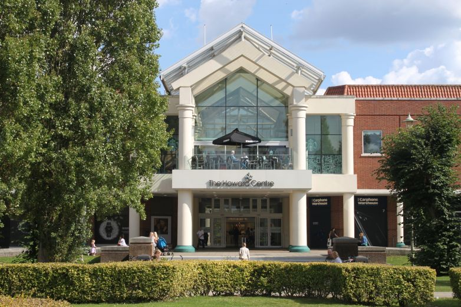

Railway Station Now - Howard Centre
The original station was opened here in 1926, once the railway company was convinced it would be profitable. It was demolished in 1988 as part of the development of the Howard Centre and reopened in its current form in 1990.

Railway Station Back in 1926
The original station was opened here in 1926, once the railway company was convinced it would be profitable. It was demolished in 1988 as part of the development of the Howard Centre and reopened in its current form in 1990.